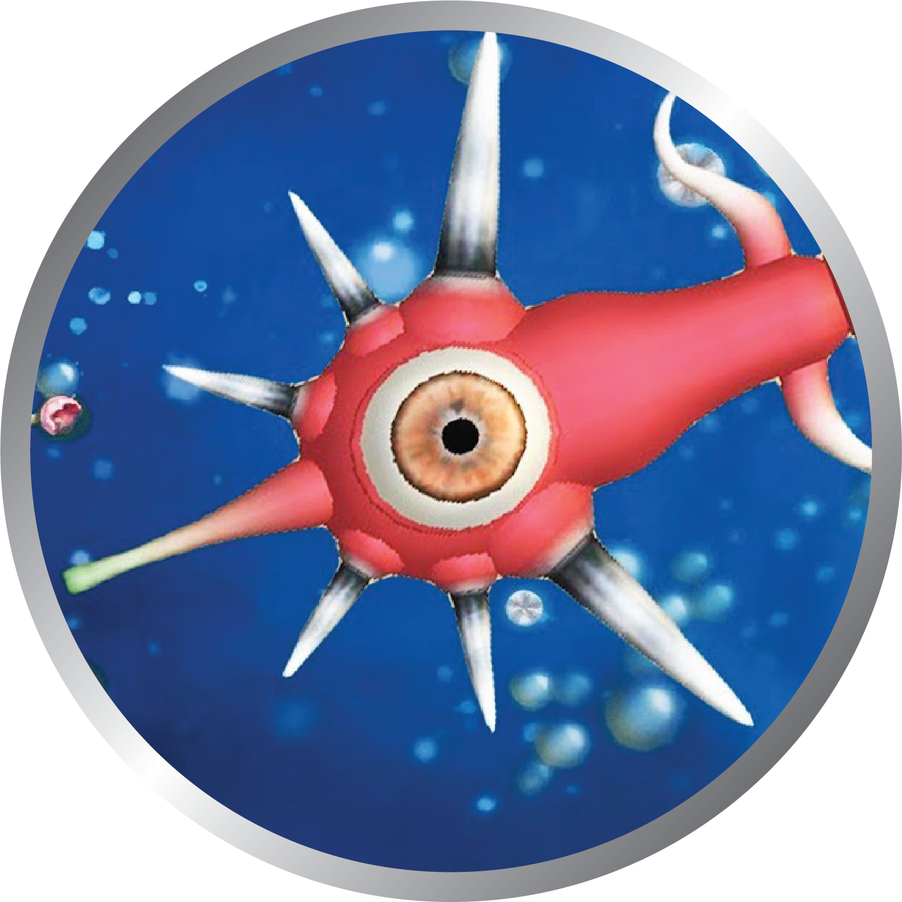

-

The Cell Stage is the first stage in Spore in which you play as a cell and tasked with guiding a cell of their new species through a primordial ooze.
-

The Creature Stage is the second stage in Spore in which you are challenged to gain DNA points to gradually increase your creatures brain size.
-

The Tribal Stage is the third of Spore's game stages, and deals with the independence of species, forming simple societies, and outcompeting other tribes with cooperation or domination.
-

After organizing into a city and creating vehicles, the player leaves the Tribal Stage and begins the Civilization Stage, the fourth of Spore's five game stages.
-

The Space Stage is the fifth and final stage in Spore, beginning after the Civilization Stage and continuing for the duration of the game. Evolving from the planet-bound nation, the player now controls a fully fledged Empire and can explore the vast stretches of the Spore Galaxy in their own personal spaceship, overseeing everything from trade and diplomacy with alien civilizations to interstellar war.